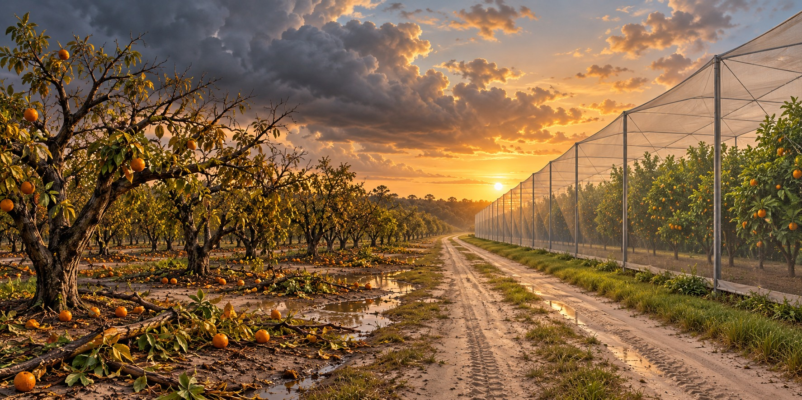

When the Orange Groves Blew Away
Hurricanes Never Destroyed Florida Citrus Alone, But They Kept Showing Up at the Worst Possible Moment

Hurricane wind can leave a citrus grove covered with fallen fruit, snapped limbs and uprooted trees. Floodwater may keep damaging roots after the skies clear. For a grower already fighting disease, the storm is another injury to an investment that takes years to establish. Florida citrus declined through several overlapping pressures, rather than one hurricane alone.
A Century of Moving South
Severe freezes repeatedly damaged Florida citrus and encouraged growers to establish groves farther south. Moving reduced some cold-weather exposure but could not remove hurricane risk. Groves in warmer regions still faced wind, flooding, pests and disease.
Hurricanes can kill citrus trees outright or weaken surviving trees through wind injury, flooding and salt exposure. Recovery depends on tree condition before the storm as well as the damage itself. Disease can make a grove less able to recover even when many trees remain standing.
Four Storms, Six Weeks
Charley, Frances, Ivan and Jeanne struck Florida in the 2004 season. Storms stripped fruit and damaged groves, while wind-driven rain helped spread citrus canker. The state eventually ended its canker eradication program, leaving growers to manage another persistent disease.
The Disease That Arrived the Same Year
In 2005, the year of Hurricane Wilma, citrus greening (Huanglongbing, or HLB) was first detected in Florida’s commercial groves. Spread by the Asian citrus psyllid, it attacks a tree’s vascular system, producing small, bitter fruit and eventually killing the tree. There is no known cure.
USDA reported 12.2 million boxes of Florida oranges for the 2024–25 season, down 32 percent from the previous season. That historical harvest figure is different from an early forecast. Disease and disasters together contributed to the long decline; a comparison must use the same crop, season and measurement throughout.
When the Storm Comes for an Already-Dying Tree
Irma in 2017 and Ian in 2022 brought further damage to citrus-growing regions. Lost fruit affected the current harvest, while damaged or dead trees affected later seasons. Dollar estimates differ depending on whether they measure production, infrastructure or future losses, so those categories should not be added as though they were identical.
Building a Screen Around What Survives
Citrus Under Protective Screen, or CUPS, uses large screen structures to exclude the Asian citrus psyllid that spreads greening. UF/IFAS research examines this approach as one way to grow healthy trees. It addresses an insect pathway, while the structure itself still needs maintenance and can face hurricane damage.
Quick Facts
| 2024–25 harvest | USDA reported harvest: 12.2 million boxes of oranges |
|---|---|
| Citrus greening (HLB) | First detected in Florida in 2005; spread by the Asian citrus psyllid |
| CUPS | Screen structures designed to exclude the psyllid |
Did You Know?
Greening was first found in Florida the same year as Hurricane Wilma.
Freezes pushed Florida citrus south long before the hurricanes arrived.
Vocabulary
Citrus greening: a bacterial citrus disease, formally Huanglongbing (HLB), spread by a small insect.
Citrus canker: a bacterial disease causing lesions on fruit and leaves and fruit drop.
CUPS: Citrus Under Protective Screen, large mesh structures that keep out disease-carrying insects.
Discussion Questions
1. Why did hurricanes matter more to citrus after 2004 than before?
2. What does CUPS change, and what does it leave unsolved?
Related Articles
FLH-0010 — Hurricane Wilma (2005)
FLH-0011 — Hurricane Irma (2017)
FLH-0024 — The Day the Wind Took the Barn
FLH-0036 — Hurricanes and the Florida Cattle Industry
Sources
USDA Economic Research Service. “Natural Disasters, Disease Cut Florida Orange Production an Estimated 92 Percent Since 2003/04.” ers.usda.gov
WBUR, On Point. “The Fall of Florida Citrus.” (Wayne Simmons). wbur.org
Singerman, Ariel. “The Perfect Storm That Hit Florida Citrus.” Choices Magazine. choicesmagazine.org
Citrus Industry Magazine. “Florida Citrus Decline Detailed.” citrusindustry.net
FOX 13 Tampa Bay. “Florida Citrus Industry Rebounds with New Technology After Years of Decline.” (Steven Callaham). fox13news.com
USDA NASS — Citrus Fruits 2024 Summary, August 2025